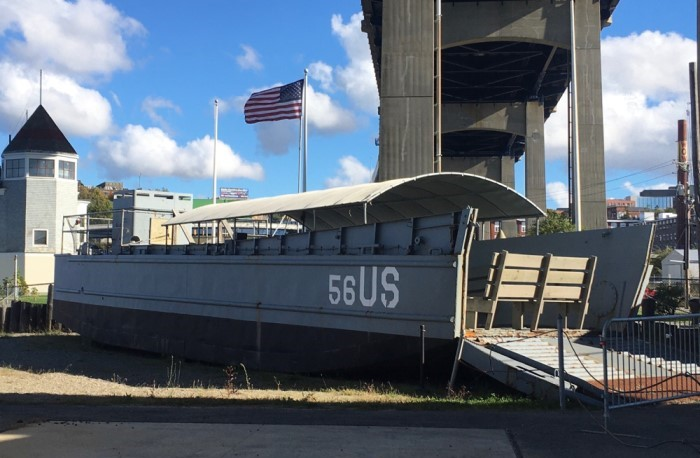

Exploring Battleship Cove
USS Massachusetts and other museum ships
By: Evan Lee
Oct. 22, 2023 |
Adventures
Battleship USS Massachusetts (BB-59)
My best friend Leighah recently moved to the South Shore, so we decided to get together to explore one of the area’s landmark attractions - Battleship Cove in Fall River.
Founded by original crew members of the USS Massachusetts, who wanted to save their World War II era battleship from being sold for scrap, this memorial and museum has expanded to include several more ships, aircraft and a submarine since it opened in 1965.
Leighah in front of USS Joseph P. Kennedy Jr., followed by
The submarine, USS Lionfish, was under repair when we visited. And one of the smaller ships, a former Soviet East-German corvette named Hiddensee, had unfortunately been scrapped earlier this month due to the deterioration of its hull, according to the Fall River Reporter.
But, we still got to board the battleship itself as well as the cold-war era destroyer USS Joseph P. Kennedy Jr.
There’s also a fully restored PT Boat on display inside a building along with the preserved remains of one that was once commanded by future President John F. Kennedy during WWII, PT-59.
Another restored PT Boat that was formally on display is currently in storage under a tarp. We spotted it from the dock and I recognized its iconic shark mouth paint scheme from the last time I visited well over a decade ago.
But what I was actually most excited to see again was the smallest vessel in the Cove’s fleet, a Higgins landing craft beached right beside the entrance.
Higgins Landing Craft, Mechanized (LCM)
It’s the same type of boat my grandfather, Edward D. Lee, commanded during the Pacific Theater of WWII. He was a Technical Sergeant for Company A of the 544th Engineer Brigade and Shoreline Regiment.
My first trip here was with him and my Dad when I was around 10 or so, sometime in the late 2000’s. I remember being absolutely astonished by all the huge ships docked in front of me and wanting to hurry right over the big battleship. But Grandpa was drawn to the little boat on the side, his old landing craft.
Boarding it again for the first time in 60 years, I remember seeing the memories pour back into him as he pointed out every little aspect of the boat and how he and his crew lived on it throughout the war.
They built a canopy over the cargo hold and stored food inside its ballast tanks for safekeeping on their many treks across the sea to different islands, he said. LCM crews like his delivered essential supplies and manpower to the keep the fight going.
Speaking of the creator behind these landing crafts, “Andrew Higgins is the man who won the war for us,” said General Dwight D. Eisenhower.
In 2023, the one on display at Battleship Cove is no longer boardable. It seems to have been converted into a theater with benches and a screen now inside it. But nothing was playing when Leighah and I visited last Thursday, so we could only see it from behind a gate.
Courtesy Leighah, her camera is better than mine.
Moving on to “Big Mamie,” the nickname for Battleship Massachusetts, we were able to freely explore much of the 680ft boat’s upper and lower decks. Jumping through raised oval-shaped doorways and trying not to hit our heads on steep narrow staircases, we reached both the highest and lowest points visitable by the public.
It’s pretty surprising just how much of the ship is available to explore. We found ourselves in engine rooms, officer’s quarters, gunpowder loading areas, and even a post office among other places.
A radar room aboard USS Massachusetts.
I couldn’t even count the rows upon rows of sleeping cots we passed along the way. Truly, what was most essential to the ship were all the sailors and personnel needed to operate it at sea.
Certain preserved rooms are decorated with period artifacts and uniformed mannequins, viewable from behind clear plexiglass. Other areas have been converted into museums displaying historical pieces from several different wars. And memorials dedicated to those lost during their service also have a prominent place on the ship.
There are arrow markers and signs posted frequently to help guests find their way around, it’d be easy to get lost otherwise.
One of them pointed down at a small crevice entryway we never would have spotted on our own. Crawling through that, we wound up in a cramped room I believe was used to calibrate the trajectory of shells.
Bombs away! Trying to see through the periscope.
The other big ship, USS Joseph P. Kennedy Jr., took us less time to explore fully as its a smaller destroyer. But like the USS Massachusetts, many of its levels and rooms are open to the public too.
We took a break in one of its cafeteras, sitting at a table where officers once ate and relaxed. There was a bookshelf behind us and one table had a backgammon board painted on it.
From the destroyer, visitors used to be able to reach the submarine, USS Lionfish. It’s a more unique vessel to explore with narrow halls and compact rooms for deep sea voyages. We spotted workers doing repairs on it, so hopefully it will open back up again soon.
The now scrapped Hiddensee corvette was also once reached from the submarine. I remember bridges connecting the three vessels together the first time I visited. But now only the destroyer and battleship are boardable.
After exploring everything, you can grab a bite to eat right aboard the battleship in its officer’s cafetera. Open from 11am to 2pm, there’s burgers and hotdogs among other snacks on the menu. But I guess we explored a little too much because it was closed by the time we got there around 3pm.
Since its October, we were also amused to find many rooms and corridors decorated for Halloween. Skeletons were attacking uniformed mannequins while witches brewed up something sinister in the kitchen.
Spooky, scary, skeletons all around the ship.
We imagined this was set up as a fun surprise for Boy Scouts on their “Nautical Nights Overnight Camping” trip to the battleship. Leighah’s cousin actually did the trip once and got to sleep over on one of the many cots we saw. I tried one out too, but it wasn’t something I’d want to spend the night on.
Overall, Battleship Cove makes for a fun day trip on the coastline, allowing guests to walk through the same corridors that sailors once did and learn the history of their service.
Tickets cost us $25 each as adults, and there are discounts for active military, veterans, seniors, and children. It’s open seven days a week from 9am to 4pm.
Squinting because I didn’t bring sunglasses.
Courtesy Leighah